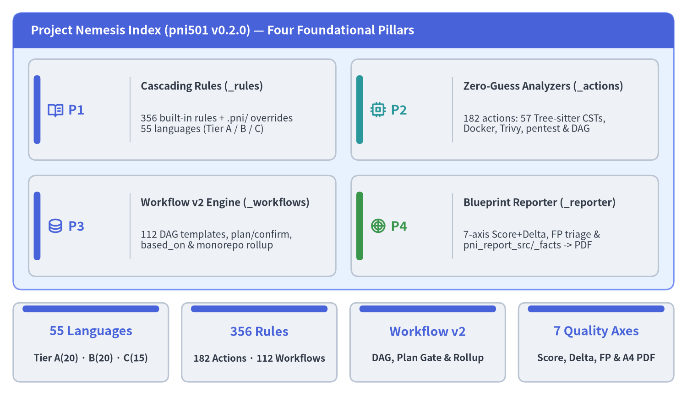

pni501 (Project Nemesis Index) — Official Documentation
Project Nemesis Index (pni501 v0.2.0) is an AI-native software health auditing, security penetration testing, monorepo rollup, and migration planning framework supporting 55 programming languages via 57 native tree-sitter CST grammars (replacing ast-grep-py). By combining deterministic static and container analyzers with a SQLite-backed Workflow v2 Conditional DAG engine (needs: / when:, Phase 0 recon planning, and confirm_plan alignment gates) and self-contained Drawlib visual reporting (pni_report_src -> pni_report with synced _facts/), pni501 eliminates LLM metric and path hallucinations while delivering reproducible 7-axis health scores with Evidence Delta (Δ), auditable false-positive triage (finding_adjustments), topological migration plans, and publication-grade A4 PDF / HTML reports.

Source Code
from drawlib.canvas import save, setup
from drawlib.icons import phosphor
from drawlib.smartarts import KpiCards, Panel
from drawlib.styles import Styles
setup(width=156, height=90, dpi=150)
outer = Panel(
"Project Nemesis Index (pni501 v0.2.0) — Four Foundational Pillars",
header_variant="filled",
style=Styles.PrimaryNeutral.patch(shape_r=2.0),
header_style=Styles.PrimaryFlat,
text_style=Styles.WhiteBold.patch(text_size=12.5),
)
outer.draw(xy=(3.0, 24.0), width=150.0, height=63.0)
cards = KpiCards(
style=Styles.Neutral.patch(shape_r=1.8),
metric_style=Styles.PrimaryBold.patch(text_size=13.5),
text_style=Styles.DarkBold.patch(text_size=10.8),
description_style=Styles.Dark.patch(text_size=10.0),
accent_position="left_pill",
accent_style=Styles.PrimaryFlat,
icon_style=Styles.PrimaryBold,
spacing=3.5,
)
cards.add(
"P1",
"Cascading Rules (_rules)",
"356 built-in rules + .pni/ overrides\n55 languages (Tier A / B / C)",
icon=phosphor.book_open_text,
)
cards.add(
"P2",
"Zero-Guess Analyzers (_actions)",
"182 actions: 57 Tree-sitter CSTs,\nDocker, Trivy, pentest & DAG",
accent_style=Styles.SecondaryFlat,
metric_style=Styles.SecondaryBold.patch(text_size=13.5),
icon_style=Styles.SecondaryBold,
icon=phosphor.cpu,
)
cards.add(
"P3",
"Workflow v2 Engine (_workflows)",
"112 DAG templates, plan/confirm,\nbased_on & monorepo rollup",
icon=phosphor.database,
)
cards.add(
"P4",
"Blueprint Reporter (_reporter)",
"7-axis Score+Delta, FP triage &\npni_report_src/_facts -> PDF",
accent_style=Styles.SuccessFlat,
metric_style=Styles.SuccessBold.patch(text_size=13.5),
icon_style=Styles.SuccessBold,
icon=phosphor.chart_polar,
)
cards.draw(xy=(6.5, 27.0), width=143.0, height=49.5, columns=2)
kpis = KpiCards(
style=Styles.Neutral.patch(shape_r=1.6),
metric_style=Styles.PrimaryBold.patch(text_size=13.0),
text_style=Styles.DarkBold.patch(text_size=10.0),
accent_style=Styles.PrimaryFlat,
accent_position="top_bar",
metric_layout="top_stack",
spacing=3.0,
)
kpis.add("55 Languages", "Tier A(20) · B(20) · C(15)")
kpis.add("356 Rules", "182 Actions · 112 Workflows")
kpis.add("Workflow v2", "DAG, Plan Gate & Rollup")
kpis.add("7 Quality Axes", "Score, Delta, FP & A4 PDF")
kpis.draw(xy=(3.0, 3.0), width=150.0, height=18.0, columns=4)
save()
1. Executive Overview: Hybrid Deterministic + AI Engineering Engine
Purely prompt-driven LLM code reviews suffer from non-deterministic counting errors, invented file paths, skipped audit categories, silent false-positive overrides, and blindness to container runtime behavior, dependency CVEs, and live HTTP attack surfaces. Conversely, purely static linters cannot evaluate domain boundary cohesion, aspect-separated system architecture, or phased modernization trade-offs.
pni501 (v0.2.0) bridges both worlds across 55 supported programming languages organized into three capability tiers—Tier A Full Audit (20), Tier B Declarative Static Audit (20), and Tier C Companion IaC/Schema/Build/Config (15)—by orchestrating 356 built-in rule files, 182 action templates, and 112 workflow templates in a unified pipeline:
- Native Tree-sitter CST Engine & On-Demand ABI3 Grammar Caching:
pnireplacesast-grep-pywith a parse-once nativetree-sitterCST engine spanning 57 grammars—52 official PyPItree-sitter-*wheels plus 5 MIT-licensed grammars (COBOL,R,Vue,Protocol Buffers,Dockerfile) cached lazily from GitHub Releases with pinned SHA-256 verification (pni grammars status/prefetch/clear), keepingpni501a lightweight pure-Python (py3-none-any) package. - Programmatic Multi-Modal Fact Extraction: Parallelized DAG collectors execute
project_inspect, 55-languageast_analyze, isolated Dockerrun_check(offline unit tests, coverage, and HTTP boot probes), socketless Trivysecurity_scan(CVEs, IaC misconfigurations, and leaked secrets), loopbackpytest+httpxweb_pentest, topologicalmigration_analyze, and Gitprogress_analyze, persisting exact telemetry into.pni/cache/<workflow_id>/facts.jsonand.pni/cache/workflow_state.db. - Workflow v2 DAG, Executed Audit DAG, Evidence Delta & Visual Reporting: Preview Phase 0 reconnaissance and a validated Mermaid DAG (
pni workflows plan <id>), align scope atconfirm_plan(or pass--auto-approve --pull), triage deterministic findings transparently viafinding_adjustments, and emitpni_report/<target>_score.json(schema_version="2.0"with Executed Audit DAG and 7-Axis Evidence Delta Δ),*_summary.json, and*_findings.sarif(SARIF 2.1.0). Chainbased_onmigrations, aggregate multi-language monorepos viacategory: rollup, and compile flat, self-contained Drawlib visual reports (pni_report_src/with auto-synced_facts/->pni_report/<target>.pdf& HTML).

Source Code
from drawlib.canvas import save, setup
from drawlib.icons import phosphor
from drawlib.smartarts import CardList, ChevronProcess
from drawlib.styles import Styles
setup(width=156, height=70, dpi=150)
pipeline = ChevronProcess(
style=Styles.PrimaryNeutral,
text_style=Styles.DarkBold.patch(text_size=10.2),
description_style=Styles.Dark.patch(text_size=9.8),
corner_angle=65.0,
spacing=1.5,
flat_left_end=True,
)
pipeline.add(
"1. Plan & Gate\n(Phase 0-1)",
description="workflows plan\n& confirm_plan",
)
pipeline.add(
"2. Parallel Facts\n(55 Langs)",
description="57 CSTs + Docker\n+ Trivy + Pentest",
style=Styles.Neutral,
)
pipeline.add(
"3. Grounded AI\n& FP Triage",
description="3-Aspect Arch +\nFP Adjustments",
style=Styles.PrimaryFlat,
text_style=Styles.WhiteBold.patch(text_size=10.2),
description_style=Styles.White.patch(text_size=9.8),
)
pipeline.add(
"4. 7-Axis Score\n& Rollup/Plan",
description="Score + Delta,\nSARIF & based_on",
style=Styles.SecondaryNeutral,
)
pipeline.add(
"5. Flat Drawlib\nA4 PDF",
description="pni_report_src ->\npni_report/*.pdf",
style=Styles.SuccessFlat,
text_style=Styles.WhiteBold.patch(text_size=10.2),
description_style=Styles.White.patch(text_size=9.8),
)
pipeline.draw(xy=(3.0, 43.0), width=150.0, height=23.0)
artifacts = CardList(
style=Styles.Neutral.patch(shape_r=1.6),
text_style=Styles.DarkBold.patch(text_size=10.4),
description_style=Styles.Dark.patch(text_size=9.8),
badge_shape="circle",
badge_style=Styles.PrimaryFlat,
badge_text_style=Styles.WhiteBold.patch(text_size=10.0),
icon_style=Styles.WhiteBold,
direction="horizontal",
show_arrows=True,
arrow_style=Styles.DarkBold,
spacing=3.0,
)
artifacts.add(
"plan & facts.json",
".pni/cache/<wf>/ + _facts/\nCST, Docker, Trivy & pentest",
icon=phosphor.file_magnifying_glass,
)
artifacts.add(
"workflow_state.db",
"Workflow v2 DAG (needs/when)\n& path-verified arch JSON",
icon=phosphor.database,
)
artifacts.add(
"Score, SARIF & Plan",
"pni_report/*_score.json,\n*.sarif & *_migration_plan",
icon=phosphor.medal,
)
artifacts.add(
"Flat PDF & HTML",
"pni_report_src -> pni_report\nVector A4 PDF & HTML",
badge_style=Styles.SuccessFlat,
icon=phosphor.file_pdf,
)
artifacts.draw(xy=(3.0, 4.0), width=150.0, height=34.0)
save()
2. Key Capabilities at a Glance
| Capability Area | Built-In Assets (v0.2.0) |
Primary Output / Guarantee |
|---|---|---|
| Supported Languages | 55 languages (57 native tree-sitter CSTs): 20 Tier A (Full Audit), 20 Tier B (Declarative Static), 15 Tier C (Companion IaC/Schema/Build/Config) |
Pure-Python PyPI wheel (py3-none-any); 52 PyPI abi3 wheels + 5 lazy GitHub Releases MIT grammars (pni grammars) |
| Cascading Engineering Rules | 356 built-in rule files (common/ + 55 language scopes) + .pni/rules/ overrides |
Enforces OWASP ASVS, OpenSSF Scorecard, 12-Factor, SRE PRR, CLI & library standards |
| Composite Actions & Primitives | 182 action templates expanding into 16 canonical PrimitiveType steps |
Parallel auto-advance deterministic analyzers paired with schema-validated AI judgment |
| Workflow v2 DAG Engine | 112 workflow templates (audit, rollup, migration, progress) with needs: / when: |
pni workflows plan, confirm_plan gate, pni validate-mermaid, single-command --pull / --next / -o |
| 7-Axis Quality Scoring & Triage | architecture, code_quality, typing, testing, dependencies, security, documentation |
Executed Audit DAG, baseline vs. adjusted Evidence Delta (Δ), auditable finding_adjustments, SARIF 2.1.0 |
| Flat Drawlib Visual Reporting | Self-contained pni_report_src/ (with synced _facts/) -> pni_report/ (or docs_src/reports/<slug>) |
7-chapter Audit/Migration, 6-chapter Rollup & 5-chapter Progress A4 vector PDFs & HTML via pni report build |
Supported 55 Languages by Tier
- Tier A — Full Audit (20):
Python,Java,PHP,Go,TypeScript,JavaScript,C#,Rust,Ruby,Kotlin,Swift,C,C++,Scala,Dart,Elixir,Vue,Perl,COBOL,R. - Tier B — Declarative Static Audit (20):
Bash/Shell,PowerShell,Groovy,Objective-C,Lua,Haskell,F#,OCaml,Zig,Julia,Fortran,MATLAB,Svelte,Solidity,CUDA,Verilog/SystemVerilog,VHDL,Ada,Odin,Common Lisp. - Tier C — Companion IaC, Schema, Build & Config (15):
Dockerfile,HCL/Terraform,Bicep,Nix,Makefile,Starlark/Bazel,Protocol Buffers,SQL,HTML,CSS,SCSS,YAML,JSON,TOML,XML.
3. Quick Installation & First Workflow v2 Audit
Install pni501 via pip or uv, initialize .pni/, preview the Phase 0 recon plan & Mermaid DAG, and launch the single-command Workflow v2 loop:
# Install pni501 (pure-Python wheel with 52 PyPI tree-sitter wheels; 5 extra MIT grammars cached lazily)
pip install pni501
# Or with uv:
uv add pni501
# Initialize .pni/ configuration, rules, actions, and workflows
pni init
pni grammars status
pni workflows list
# Preview Phase 0 recon & validated Mermaid DAG, then start and pull act-01 in one command
pni workflows plan full_audit
pni workflows start full_audit --auto-approve --pull
4. Documentation Roadmap
Explore the complete pni501 documentation by section:
4.1 Getting Started
- Background & Core Concepts — Why ad-hoc AI prompting fails on real-world repositories and how PNI's four pillars guarantee zero-hallucination 55-language audits.
- Quickstart Guide — Step-by-step installation,
pni grammars,.pni/initialization,pni workflows plan/confirm_plan, single-command--pull/--nextexecution, and flatpni_report_src -> pni_reportbuilds. - Primary Use Cases — Continuous sprint health monitoring, black-box legacy & monorepo
rollupauditing, and prerequisite-gated migration planning. - Release Notes — Version history (
v0.1.0–v0.2.0), 55-language Tree-sitter CST expansion, Workflow v2 DAG engine, and flat report architecture.
4.2 Architecture, Workflows, Scoring & Reference
- Domain Architecture & Cascade and Stateful Pull-Push Engine — Internal package design, 3-layer cascade, and SQLite Workflow v2 DAG state transitions.
- Workflows & Pre-Flight Gates, 182 Actions & 16 Primitives, and Analyzers & Live Pentest — Deep dive into conditional DAG workflows (
needs:/when:), monoreporollup, and deterministic analyzers. - 7-Axis Scoring Model, Drawlib Visual Reporter, and Sample Reports Gallery — Executed Audit DAG, Evidence Delta (Δ),
finding_adjustments, flatpni_report_src/_factsblueprints, and live bilingual HTML/PDF sample reports. - Supported 55 Languages and Rules & CLI Reference — Three-tier 55-language CST matrix, on-demand
pni grammarscaching, and complete CLI reference.